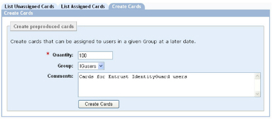

|
IdentityGuard Server 12.0 Administration Guide |
|
IdentityGuard Server 12.0 Administration Guide |
Follow the following tasks to create grid cards that you will later print and assign to users.
1. Create the cards in Entrust IdentityGuard. See To create preproduced grid cards .
2. Export the cards to a CSV file. See Exporting grid card information.
3. Give the CSV file to your printer for printing.
4. Assign the grid cards to users. See Assigning grid cards to users.
5. Distribute the grid cards by mail or in person.
Note: Step 3 and Step 4 can be performed in reverse order.
Attention: When a directory is used as the IdentityGuard repository and the file-based grid card preproduction repository on replica servers is disabled, administrators should make sure they connect to the instance of the Administration service running on the primary server. Alternatively, configure the Administration interface on the replica server to use the Administration service on the primary server.
To create preproduced grid cards
1. Log in to the Entrust IdentityGuard Administration interface as the administrator.
2. On the main menu, click Cards.
3. Click the Create Cards tab.
The Create Cards page appears.

4. In the Quantity field, type the number of grid cards you want to create. You cannot create more than 1,000 grids at a time in the Administration interface. You can create more than 1,000 grids at one time using Bulk files. For more information, see Grid card bulk operations.
5. In the Group drop-down list, select the group you want to associate the grid cards with.
6. Optional. Type any comments.
7. Click Create Cards.
A summary page appears with a success message indicating the range of the grid cards serial numbers.
You can now:
● Assign the grid cards to users in the same group.
● Edit their group association.
● Arrange to print or reproduce the grid cards (see To export and print grid cards).